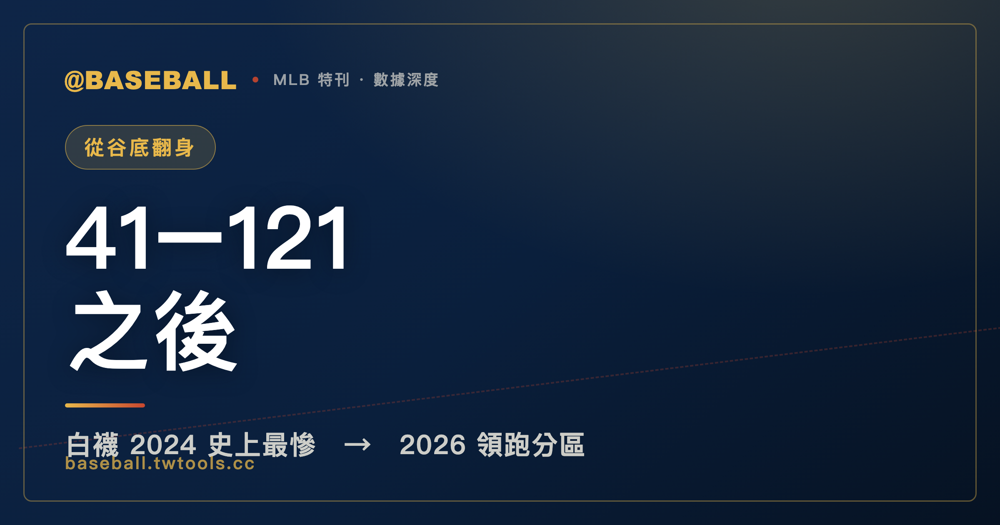

從 41 勝 121 敗到美聯中區第一：芝加哥白襪的兩年落差
41 勝 121 敗，然後是 41 勝 38 敗、與守護者並列分區首位。芝加哥白襪用兩個賽季走過了一條罕見的曲線：從現代大聯盟史上最慘的單賽季之一，到 2026 年賽季過半與守護者並列美聯中區首位、官方分區表暫列領頭羊。勝率 .519、得失分淨值僅 -3，這不是一支橫掃聯盟的強隊，但在一個五隊勝率都未過 .520 的分區裡，他們做到了一件事：站在最前面。

MLB 特刊｜芝加哥白襪 2026
有些數字天生就帶有重量，讓你不需要任何背景就感受到它的份量。
41 勝 121 敗，就是這樣的數字。
2024 年的芝加哥白襪（Chicago White Sox）打出了這份成績單。大聯盟每支球隊一個賽季打 162 場，而白襪那一年輸掉了其中 121 場——也就是說，他們在四分之三的比賽裡都輸了。如果你用另一個角度來感受這個數字：一個球迷整個夏天去球場看球，平均下來，每去四趟就有三趟是帶著輸球的心情回家。更殘酷的是，那個賽季白襪得到 507 分、丟掉 813 分，得失分差高達 -306，被對手外加了整整 306 分。這不只是「很爛」，這是一個讓棒球統計學家都要來查查歷史位置的數字。
然後，時間往前走了兩年。
2026 年的賽季進行到 6 月 25 日，同一支芝加哥白襪，戰績來到 41 勝 38 敗，與守護者同勝率並列美聯中區（AL Central）首位。
同樣是 41 勝——在 2024 年，那個數字代表輸掉了大半個賽季；在 2026 年，那個數字是站在分區排名第一的位置。這個對照，不是修辭技巧，而是真實發生的事。這篇文章，就試著把這兩年的落差講清楚，同時也誠實說說：這支分區第一的白襪，究竟是什麼成色。
一、那個讓棒球史都記住的 2024 賽季
要了解 2026 年的白襪，必須先正視 2024 年的白襪。
那一年是有史以來的事情。現代大聯盟（通常以 1961 年美聯擴充賽季、各隊賽程拉長為基準起算）已經走過六十幾年，見過各式各樣輸球的球隊，但 2024 年的白襪仍然在這份名單裡佔有特殊的位置。
121 敗，是這個數字的核心。在大聯盟漫長的歷史中，單季超過 120 敗的球隊屈指可數，每一支都有自己慘烈的故事。白襪在 2024 年的所作所為，不是「積極重建中的陣痛」這幾個字能夠輕描淡寫帶過的——他們在那一整年，幾乎每隔幾天就在刷新「今天又輸了」的記憶。
得失分 -306 說明的是另一個層次的問題。棒球裡有一個被廣泛引用的概念：從長期來看，一支球隊的勝敗往往跟得失分差高度相關，因為得多丟少的球隊，遲早會在積分榜上反映出來。-306 代表的是，白襪不只是「在接近的比賽中輸多贏少」，他們是在系統性地以大比分崩盤——被對手用大局壓制、而自己的進攻又撐不起來。這不是運氣問題，這是整體戰力的全面落差。
用一個更具體的方式來感受 -306 這個數字：162 場賽季裡，平均每場比賽，白襪要被對手多得近兩分。這不是某幾場大敗拖垮的偶發數字，而是整個賽季從第一場到最後一場，投打兩端全面劣勢的累積結果。當進攻端無力得分、先發與牛棚又雙雙失守，比賽還沒開始就像注定要輸，這種壓抑的感覺在整個芝加哥球季裡揮之不去。
然而，就在這一切的廢墟之上，兩年後出現了一個讓人必須瞪大眼睛確認的事實：那些走過 2024 年的白襪，他們在 2026 年來到了分區第一的位置。
這個轉變值得停下來想想它到底有多罕見。大聯盟的球隊重建，通常需要若干年的時間——清掉老合約、培育農場、讓年輕人上來磨練、逐步補強陣容。這個過程快的要三、四年，慢的要五到七年，而且還不保證成功。白襪的這條曲線，從 2024 年的徹底崩盤，到 2026 年的賽季過半分區領先，時間跨度只有兩個賽季。無論最終結果如何，光是這個速度本身，就是一件值得被認真記錄的事。
二、兩年之間：數字說的故事
讓數字自己說話，這裡先放一張最核心的對比表。
| 項目 | 2024 年（完整賽季） | 2026 年（截至 6/25，79 場） |
|---|---|---|
| 勝場 W | 41 | 41 |
| 敗場 L | 121 | 38 |
| 勝率 PCT | .253 | .519 |
| 得分（全隊） | 507 | 364 |
| 失分（全隊） | 813 | 367 |
| 得失分差 | -306 | -3 |
這張表值得多停留幾秒。
首先，注意那個勝率的變化：從 .253 到 .519。前者大約是每十場只贏兩到三場；後者是十場贏五場稍多，剛剛超過平盤。這不是從爛變好，這是從「歷史級的爛」變到「勉強稱職」。但在這個故事的框架下，這個轉變就已經足夠驚人。
其次，也是這篇文章要反覆強調的：看那個得失分差。2024 年是 -306，代表全隊整季被多轟了 306 分——這個數字的嚴峻程度，放在任何時代都很難看。而 2026 年截至目前，得失分差是 -3。對，就是負三分，幾乎是完美平盤。這代表什麼？代表這支 2026 年領跑分區的白襪，論整體投打品質，其實是一支剛剛超過損益兩平的球隊，而不是一支真正在碾壓對手的強隊。
79 場比賽，平均每場剛好失分多一點點——這樣的球隊，在一個競爭激烈的分區大概會是排名中間的陪跑者。而他們能夠站在分區第一，有很大程度必須放進分區的整體脈絡來理解，下一節會詳細拆解這個問題。
這裡也值得特別說明一個棒球統計概念，幫助讀者理解得失分差的意義。在大聯盟的分析圈裡，有一個叫做「畢達哥拉斯勝率」的估算公式，它的邏輯是：一支球隊的「理論應有勝率」，可以透過得分與失分的比例來估算。這個方法背後的直覺很簡單——如果一支球隊整個賽季得 364 分、失 367 分，這幾乎是完美的平盤，理論勝率應該非常接近 .500；而他們實際勝率是 .519，略高於理論值。
這中間的差距通常稱為「幸運值」或「一分球把握度」，代表這支球隊很可能在接近的比賽中（即單分差或兩分差的比賽）有不錯的表現，用緊繃的勝利累積了比得失分預期更多的勝場。這種能力有時候是真實的競爭優勢（例如牛棚在關鍵時刻封鎖對手），但也有隨機成分——長期下來，這類「幸運超表現」往往會有一定程度的均值回歸。換句話說，如果白襪繼續用得失分淨 -3 的品質打球，卻又希望維持 .519 的勝率，從統計上來說並不是最穩固的基礎。
另一個值得看的角度是主客場的拆分。2026 年的白襪，在主客場之間有相當明顯的落差：
| 2026 白襪（截至 6/25） | 勝 W | 敗 L | 勝率（概估） |
|---|---|---|---|
| 主場 | 26 | 13 | .667 |
| 客場 | 15 | 25 | .375 |
| 合計 | 41 | 38 | .519 |
這個拆分非常有說話空間。
主場 26 勝 13 敗，勝率 .667——這是一個相當漂亮的主場數字，意味著在保證球場，白襪對任何來客幾乎都是熱門。但客場 15 勝 25 敗、勝率 .375，幾乎是每三場客場比賽就輸兩場，這是一支在外作戰明顯力有未逮的球隊。換句話說，2026 年白襪的戰績，很大程度上是靠主場的強勢表現撐起來的；一旦離開自家球場，他們就回到了一支微弱負勝率的球隊面貌。
這個主客場分裂本身不見得是問題——季後賽前的例行賽，有主場優勢的球隊自然要善用它。但它提供了一個更誠實的觀察視角：白襪的 41 勝 38 敗，並非均勻地建立在各種場景下，而是相當程度地依賴了主場環境。這支球隊在客場的真實面目，是值得在接下來的賽季觀察的重要指標。
三、美聯中區的全貌：這個分區在 2026 年有多弱？
要理解白襪的分區第一，就必須正視美聯中區 2026 年的整體強度。這是截至 6 月 25 日的完整分區戰績：
| 排名 | 球隊 | 勝 W | 敗 L | 勝差 GB |
|---|---|---|---|---|
| 1 | 芝加哥白襪 | 41 | 38 | — |
| 2 | 克里夫蘭守護者 | 42 | 39 | — |
| 3 | 明尼蘇達雙城 | 38 | 44 | 4.5 |
| 4 | 底特律老虎 | 34 | 46 | 7.5 |
| 5 | 堪薩斯皇家 | 34 | 47 | 8.0 |
先看這張表最顯眼的地方：第一名和第二名的勝場數其實是克里夫蘭守護者（Cleveland Guardians）多。 守護者是 42 勝 39 敗，白襪是 41 勝 38 敗。兩隊出賽場數相同（79 場），守護者的勝場比白襪多一場，但勝率因為也敗場多一場而稍低——白襪以勝率小幅壓制守護者，排在第一位。這個「領先」的成色，用「分區領先」四個字描述完全沒有問題，但它也誠實地說明了：白襪與第二名之間的距離，幾乎是零。
再往下看：明尼蘇達雙城（Minnesota Twins）38 勝 44 敗，落後 4.5 場；底特律老虎（Detroit Tigers）34 勝 46 敗，落後 7.5 場；堪薩斯皇家（Kansas City Royals）34 勝 47 敗，落後整整 8 場。
這個分區，五支球隊沒有任何一支勝率超過 .520。前兩名的勝率都在 .519 到 .519 之間，剩下三隊都在 .500 以下。這是一個整體競爭水位相當低的分區——不是說分區裡的球隊都很差，而是 2026 年的美聯中區，沒有任何一支球隊真正確立了強勢主導的姿態。
對白襪來說，這個事實提供了一個不可忽視的脈絡：他們的分區第一，是在一個「五個人裡面比誰少輸幾場」的競爭格局中拿到的，而不是在一個強隊林立的環境裡殺出重圍。這不是貶低他們，這是誠實地描述他們的領先成色。能在這樣的分區環境裡站穩第一，是一種能力；但我們也必須把「美聯中區 2026 年的整體強度偏低」這個事實，放進對白襪的評價裡一起考量。
有一個比較視角或許有助於理解這個落差。大聯盟總共有六個分區，如果把白襪目前的 41 勝 38 敗、勝率 .519 放到其他分區的排名脈絡下，他們很可能不是領先者，甚至可能落在中段班。這不是說美聯中區的球隊不努力，而是今年這個分區整體的競爭水位，確實比其他幾個分區要來得平緩一些。在美聯東區或國聯東區這種長年強隊集中的分區裡，勝率 .519 通常只代表一個「有機會但沒保證」的位置，而不是分區領先。
這個分區背景，讓白襪 2026 年的分區領先同時具有兩個意義：對白襪球迷而言，這是兩年前的黑暗之後，貨真價實的分區第一位置；而對整個大聯盟局勢的觀察者而言，這個第一名需要放進「美聯中區整體競爭強度」的框架下一起評估，才能得出一個完整的判斷。兩種視角都是對的，並不互相排斥——重點是看故事的人清楚自己站在哪個視角。
四、2026 年白襪的陣容：名冊上的面孔
在不編造任何個人數據或事蹟的前提下，這裡列出 2026 年球季截至目前，白襪名冊上出現過的球員。這是這支球隊的面孔，讀者可以自行比對過去的印象，或追蹤接下來的賽季動態：
| 背號 | 球員 | 守備位置 |
|---|---|---|
| 0 | 路易桑赫爾・阿庫尼亞（Luisangel Acuña） | CF |
| 7 | 雅各布・岡薩雷斯（Jacob Gonzalez） | 1B |
| 8 | 凱爾・提爾（Kyle Teel） | C |
| 10 | 蔡斯・梅德羅斯（Chase Meidroth） | 2B |
| 12 | 科爾森・蒙哥馬利（Colson Montgomery） | SS |
| 15 | 尚恩・紐科姆（Sean Newcomb） | P |
| 17 | 山姆・安東納奇（Sam Antonacci） | LF |
| 18 | 安東尼・凱（Anthony Kay） | P |
| 20 | 米格爾・瓦加斯（Miguel Vargas） | 3B |
| 23 | 安德魯・貝尼天帝（Andrew Benintendi） | DH |
| 24 | 布雷登・蒙哥馬利（Braden Montgomery） | RF |
| 29 | 崔斯坦・彼特斯（Tristan Peters） | CF |
| 31 | 格蘭特・泰勒（Grant Taylor） | P |
| 34 | 蘭德爾・格里丘克（Randal Grichuk） | DH |
| 36 | 德魯・羅莫（Drew Romo） | C |
| 37 | 朱尼爾・佩雷斯（Junior Perez） | CF |
| 38 | 克里斯・墨菲（Chris Murphy） | P |
| 43 | 崔佛・理查茲（Trevor Richards） | P |
| 44 | 喬丹・希克斯（Jordan Hicks） | P |
| 46 | 喬・洛克（Joe Rock） | P |
| 47 | 艾瑞克・費德（Erick Fedde） | P |
| 53 | 布蘭登・艾澤特（Brandon Eisert） | P |
| 58 | 塞蘭多尼・多明格斯（Seranthony Domínguez） | P |
| 59 | 尚恩・柏克（Sean Burke） | P |
| 60 | 布萊恩・哈德遜（Bryan Hudson） | P |
| 65 | 戴維斯・馬丁（Davis Martin） | P |
這張名冊裡有幾個觀察值得點出。
投手人數相當多——光列出的投手就超過十人，而外野手欄也出現了三個中外野手（CF）的名字。這在某種程度上反映了一個深度球隊的特徵：輪換名單頻繁異動、同一個守位有多人交替使用。這種陣容架構在漫長的 162 場賽季中有其道理，因為傷病與狀態起伏難以預測，深度往往是撐過半個賽季以上的關鍵。
這份名冊裡有老將，也有名字相對陌生的年輕球員。在本站的原則下，我們不替任何人編造數據或事蹟——這張表要傳達的，只是一個事實：2026 年的白襪，是一支在人員組成上相當多元、輪換頻繁的球隊，而在這樣的組成下，他們走到了賽季過半的分區第一。
從名冊的結構來看，這支球隊在外野與捕手位置都有明顯的多人分工。三個中外野手（CF）的名字同時出現，代表這個位置有輪換機制；同樣地，補手欄出現了兩個名字，意味著這個需要高度體力消耗的守備位置也有雙人制配置。這些設計不見得是陣容的弱點，棒球的長賽季需要足夠的深度來應對傷病、狀態起伏、以及左右打席的戰術需求。
投手群的規模同樣可觀。大聯盟球隊的典型輪換架構包含五名先發投手與六到七名牛棚投手，但名冊上呈現的投手人數更多，這通常反映了在賽季過半之前已有若干次的人員異動——不論是因為傷病、績效調整，還是戰術性的上下游之間輪動。白襪的投手陣容組成，後半賽季的表現將會是決定他們能否繼續維持分區競爭力的關鍵之一，畢竟一個賽季愈到後期，先發投手的耐久性與牛棚的深度愈重要。
五、如何誠實地理解這個「翻身」
在講完所有數字之後，這裡試著做一個誠實的總結。
白襪從 2024 年到 2026 年的轉變，是一個真實的改善。41 勝 121 敗到 41 勝 38 敗（賽季過半），這條軌跡不是幻覺，也不是算術技巧——他們確實在 2026 年贏了比輸更多的比賽，確實站在分區第一的位置。在大聯盟歷史上，這種快速的正向轉變有時候發生，有時候要花更長的時間，而白襪選擇了相對快速的版本。光是這一點，就值得被如實記錄。
但這個「翻身」，有幾個重要的誠實補充必須放進來：
第一，得失分淨值 -3 說明他們的底子仍然脆弱。 贏多輸少的球隊，從長期來看通常會有正的得失分差——因為能穩定得分、壓制失分的球隊，才是真正有競爭力的隊伍。得失分淨值 -3 的球隊站在分區第一，代表他們很可能在許多接近的比賽裡把握住了勝利，但這種表現並不保證可以一直持續。統計上，這類球隊在後半賽季往往會遭遇一些均值回歸的壓力。
第二，樣本只有 79 場，賽季還沒結束。 棒球是一個長季的運動，最終的定論要等 162 場全打完。賽季過半的排名是重要的，但它不是蓋棺論定。白襪目前的處境，是賽季後半的出發點，而不是終點的確認。後半賽季的傷病、對手調整、以及純粹的隨機波動，都可能讓分區競爭的格局徹底改變。
第三，美聯中區 2026 年的整體水位偏低，這是理解白襪領先成色的必要背景。 在一個五隊全部勝率都在 .520 以下的分區裡稱霸，跟在一個強隊林立的分區打出同樣戰績，是性質完全不同的事。白襪的分區第一，是一個真實的事實，但它的難度係數，要對照美聯中區的整體實力來判斷。
第四，客場勝率 .375 是一個必須繼續觀察的數字。 客場 15 勝 25 敗，代表白襪在離開主場之後的競爭力有明顯落差。季後賽如果有幸登場，客場比賽將無法迴避；而就算在例行賽後半段，大量的客場行程也是每支球隊都必須面對的現實。這個數字後續的走向，將是判斷白襪能否真正鞏固分區領先最重要的指標之一。
把以上四點放回那個最核心的問題：白襪的 2026 年，是一個真正的翻身，還是一個勉強稱職的球隊剛好在一個不強的分區裡排到了第一？
誠實的答案，可能是介於兩者之間。他們確實已經跟 2024 年的自己判若雲泥；但他們也還沒有成為一支在大聯盟範圍內真正具備競爭力的強隊。在這個中間地帶，他們的故事還沒有寫完。
有一個思考框架或許有助於評估白襪後半賽季的走向：如果得失分淨值繼續維持在接近零的水準，而他們能夠靠緊繃比賽的把握能力繼續積累勝場，那麼勝率 .519 在這個分區或許真的足夠撐到季末；但如果後半賽季對手開始熟悉他們的弱點、或者主要球員出現傷病，客場勝率偏低的問題可能會被進一步放大，分區的競爭格局也可能快速洗牌。守護者（Cleveland Guardians）是最明顯的第二追擊者，他們與白襪的勝差幾乎為零，後半賽季兩隊之間的直接對決，將在很大程度上決定誰能站到最後。
從球迷的角度來說，這個賽季後半的白襪，大概是近幾年芝加哥棒球界最有看頭的一段故事：一支兩年前讓人不忍直視的球隊，帶著一個不完美的戰績，在一個窗口開啟的時刻，試著把握住它。這裡面有真實的改善，也有很多未知，而這個混合體，正是棒球之所以好看的理由。
結語：41 這個數字，在兩個時空裡的意思
這篇文章從一個數字開始，也從一個數字結尾。
41，是 2024 年白襪的勝場數，那一年他們同時也拿下了 121 敗。41，也是 2026 年截至 6 月 25 日白襪的勝場數，那一年他們的敗場是 38。
同樣的 41 勝，在兩個不同的框架下，代表了完全相反的處境。2024 年的 41 勝，是在 162 場的尺度下量出來的，每一場勝利都是大海撈針；2026 年的 41 勝，是在 79 場的尺度下量出來的，每兩場就有一場以上會贏。
這個對照，某種程度上提醒了我們棒球——或者說，任何需要時間累積的事——有時候呈現的並不是連續的線性進步，而是在某個節點上，過去積累的改變突然可以在數字上被看見。
白襪的故事還在進行中，2026 年的後半賽季會帶來更多的答案。但截至今天，這支兩年前被許多人認為是「現代大聯盟最爛球隊之一」的白襪，正以 41 勝 38 敗站在美聯中區的頂端。這個事實，即便有所有的誠實補充，仍然是值得被如實記下的棒球故事。
本文數據引自 MLB 官方 StatsAPI，2024 為完整賽季（162 場），2026 統計截至 2026-06-25（賽季進行中，已出賽 79 場）。